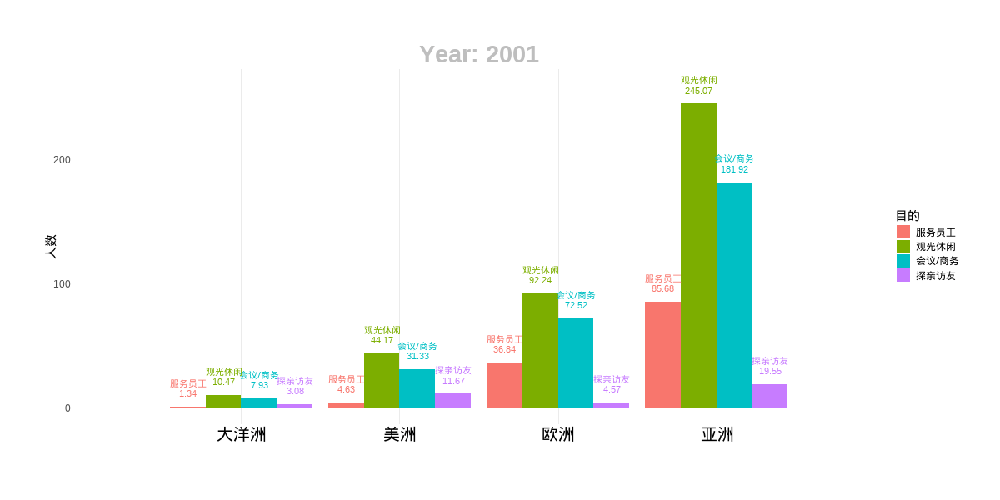

本文通过1999——2017年数据比对，从入境旅游、会议等方面人数比，结合当时国际形势，国内经济发展状况，分析国际形势、国内经济发展对入境人数、结构的影响。
1999-2017入境人数前二十国家

韩国、日本、俄罗斯一直排前三名，直到16年，缅甸和越南突入前三。
1999-2017缅甸与越南入境人数
2005年前，越南在前二十，2005—2017缅甸入境人数增加，超过越南。
2001-2018各大洲外国游客入境目的
亚洲观光旅游排第一，会议商务排第二，2016年后服务员工入境增加，超过会议商务，探亲排最后。欧洲观光排第一，2017年后，会议商务超过观光。美国观光排第一，会议商务排第二，2017年后，探亲和会议入境人数逐步一样，大洋洲观光第一，会议第二，2017年后观光降低，会议探亲增加。
2001-2018各大洲外国游客入境方式
亚洲飞机第一，2017年后徒步超飞机；欧洲飞机第一，汽车第二；2003年汽车超飞机，后飞机又排第一；美洲飞机第一，徒步汽车排2、3名；大洋洲飞机第一。
2001-2018各大洲外国游客年龄阶段
亚洲25—44岁入境人数最高，45—64岁第二，2017年后，45—64逐年减少；欧洲25—44岁入境人数最高，45—64岁第二，2017年后，25—44岁、45—64两者都减少；美洲25—44岁入境人数最高，2000年45—64岁第一，之后，25—44岁、45—64两者都减少；大洋洲2007年前25—44岁入境人数最高，2007年后45—64岁增加。各大洲中，只有美洲的最多人数入境年龄段落在45-64岁，其余均为25-44岁。
2001-2018日本与韩国会议/商务目的入境人数

各组总量对比
第一、2017年前俄罗斯低于日本、韩国，2017年后超过日本韩国；韩国2003年——2017年排第一，后降最低，日本2003年前最高，后一直居中。
第二、英国在2008年后居第二，之前居第一，后德国第一，法国、意大利一直排第三、四位。第三、美国人数一直超加拿大。第四、新加坡从2010年后居第一，马来西亚从第一降到第二，印尼最少，其他两个上下交替。第五、日韩人数一直超其他组，印马菲最低，其他差不多。
2001-2018 日本与韩国作为服务员工入境人数
各组总量对比
第一、日韩俄中日本最少，2006年前俄罗斯超过韩国，2006年后，韩国超过俄罗斯。第二、英法德意：意大利最少，但逐年上升，2016年排第五，德国最多，2013年英国超德国居第一；第三、美加：美国服务员工超加拿大；第四：菲律宾服务人员最多，其他差不多，新加坡最少；第五、印马菲组最多，日韩第二，俄罗斯排最后，美加和英组差不多。
2008-2018探亲访友亚洲占比
2013年开始，亚洲占比降低，非亚洲增加。意味着中国人的亲朋好友越来越国际化，遍布全球。
2001-2018全球入境观光休闲总人数
2001—2007观光休闲人数增加；2007——2009年下降；2009—2010上升；2010—2015年下降，2015—2017年上升。
2001-2018各大洲入境观光休闲总人数
亚洲最多，欧洲第二，美洲第三，大洋洲第四，非洲最少。除了亚洲在2013年之后有上升以外，其余各州保持下降趋势，并再未能创造更高纪录，欧美非及大洋洲来华观光旅游热情逐年下降。
2001-2018日本与韩国入境观光休闲人数
韩国与日本入境观光旅游先后在2006、2007年达到峰值，其中日本达到峰值后便一蹶不振，从2011年开始不断刷新最低入境观光旅游人数纪录，自2013年起徘徊在只有峰值的三分之一的区间，暗示了中日关系的冷却。
2001-2018全球入境外国人数
全球总人数总体呈上升趋势。
2000-2017北上广深入境游客类型
北京、上海外国人多，广州深圳香港同胞多。在四大城市中，上海自2003年后就一直居于入境外国人最多的城市，广州一直以来是澳门同胞最多的城市。

厦门台湾同胞多余福州。两地台湾同胞入境人数都于2012年达到峰值，但第二年便陡然下降至低谷，直到2015年才开始上升状态才稳定下来。
两国都在2011年到达峰值，之后便一直下降。
北京略高于上海，两座城市美国入境人数非常接近。2017年上海超过北京，北京的峰值在2011年，此后一直下降。
上海高于北京进入新世纪，北京于上海的入境日本人数量差距逐渐拉开，从2000年的旗鼓相当开始，此后上海入境日本人数目一直维持在北京的2-2.5倍左右。
北京与上海的全球入境外国人数也在拉开，上海2003年开始超过北京。从2013年开始，上海入境人数一直增长，而北京则一直下降。
广州高于深圳，深圳自2007年之后入境外国人数增长缓慢，进入了平台期，而广州仍在较快上升，并于2017年达到了峰值。
杭州高于苏州高于南京。三地在3012年以前入境外国人数都维持较高速增长，但到2013年骤降，此后慢慢恢复增长，但再未能达到峰值水平。
我国入境旅游凭借着悠久的古国历史、丰富的自然和人文资源，依托快速发展的经济和社会环境，入境接待规模持续增大，同时也扩大了中国旅游产业在国际的影响力，根据21个图表分析，一、港澳台地区是中国入境旅游业最重要的客源地，其旅游人数占中国入境旅游人数最多，与外国游客相比占有绝对优势。经过了多年的高速发展，港澳台同胞入境人次数量稳定地增长。外国游客所占比重也在逐步增加。中国入境外国游客主要集中在亚洲，美洲和欧洲入境旅游者次之，大洋洲和非洲最少。由于文化同渊性以及近年来亚洲经济的飞速发展，亚洲居民来华旅游消费需求倾向高于其他地区。韩国是中国入境旅游的第一大客源国，日本是我国多年来的前两大客源国之一，韩、日在我国外国人市场中占有重要地位。东南亚市场是我国周边地区重要的客源市场，主要包括新加坡、马来西亚、泰国、非律宾和印度尼西亚。随着中国和东盟各方而关系日益密切，中国和东南亚市场的旅游交流必将更加深入。欧洲和美洲虽然是世界上最主要的客源输出地，但由于距离遥远，历史文化、生活方式、价值观念差距等原因，入境旅游相比亚洲较低。不过，美、英等发达国家人均 GDP 高，跨国旅游支付能力强，居民来华旅游人数增长有较大潜力。大洋洲的澳大利亚和新西兰是中国在南半球的重要客源市场。非洲始终是中国对外政治、经济、文化交们的重要伙伴，但由于其经济能力有限，每年来华旅客的绝对数量不多。
总的来说，我国入境旅游发展态势良好，客源全球化进程加快。港澳台基础市场增长日趋稳健，已逐步进入稳定增长期;外国旅华市场持续增长，增长态势日益明显， 2007 年非洲市场的增长率居五大洲之首。2000 年，中国海外客源市场排名前 13 位的客源国依次是:韩国、日本、俄罗斯、美国马来西亚、新加坡、非律宾、蒙古、泰国、澳大利亚、英国、加拿大、德国、印度尼西亚法国、印度、哈萨克斯坦、意大利。
二、根据年龄结构：入境外国游客统计资料显示，25-44 岁这一年龄段占的比例最高将近半数;其次是 45一64 岁段，约占 1/3;旅游者的年龄分布呈现中间大两头小的“纺锤体”态势，中青年在旅游者在结构中占有突出地位。从变化趋势看，25一44 岁这一年龄段占的比例有所下降，45一64 岁段平稳增长，15-24 岁段保持稳定，14 岁以下入境游客所占比例有小幅上升。
三、根据旅游目的结构：入境外国游客统计资料显示，入境外国游客来华目的以观光休闲人数最多，约占整个入境外国游客的一半;会议商务次之，约占 1/4 强:再次是服务员工，约占 1/10:探亲访友的比重很小。从变化趋势看，传统的观光休闲和商务会议游客所占比重稳中有升，探亲访友和服务员工类外国游客比重持续下降，其他目的的比重保持稳定。究其原因，中国悠久的历史、灿烂的文化、辽阔的疆土、丰富的旅游资源以及不断提高的国际知名度等诸多因素，仍能使外国游客产生强烈的观光游览兴趣，而中国优惠的引资条件和大量的廉价劳动力促使发达国家选择在中国投资，与中国经贸往来相对频繁，因此来华进行商务活动的人数较多。
四、入境方式结构：入境游客统计资料显示，我国入境游客中超过一半人是以飞机、徒步方式入境的，其次是乘汽车入境，入境方式的构成，表明我国入境游客多来自边境国家或地区，表明我国的入境旅游者中短程游览者居多，一日游游客数量极大，比重极高。这些游客采用徒步方式入境，当天往返。如能够采取有效措施延长这些游客的逗留时间，就会加大其旅游消费，由于发达国家选择在中国投资，与中国经贸往来相对频紧，因此来华进行商务活动的人数较多，飞机也是外国游客入境所采用的最主要的交通工具，外国游客入境方式的构成比例提醒我们应充分重视飞机、汽车等交通运输服务质量，树立中国旅游交通的良好形象。
文化、人权、独立、和平：
1999年12月20日
澳门回归祖国。
2000.5月
江泽民主席会见由5000多人组成的日中友好观光使节访华团时表示，增进两国人民的相互理解和两国友好合作，不仅符合两国人民及子孙后代的根本利益，也有利于地区和世界的和平与发展。
2000.7
朱总理7月对5个欧盟国家和欧盟总部的访问，以及第三次中欧领导人会晤，进一步促进了中欧在各个领域的合作，有力地推动了中欧长期稳定的建设性伙伴关系的发展。
2000年9月
中国国务院新闻办公室和文化部在美国纽约等地举办"中华文化美国行"大型文化活动。这是中国政府组织的大型文化交流项目，中美两国政府对此次活动给予了高度重视。
2001年：中国加入了亚太经合组织，标志着中国融入了世界。
2004 ４月２４日至２５日
博鳌亚洲论坛２００４年年会在海南博鳌举行。本次年会的主题为“亚洲寻求共赢：一个向世界开放的亚洲”。
2005年
2005年是中国人民抗日战争胜利60周年，世界反法西斯胜利60年，联合国成立60周年，万隆会议50周年，WTO成立10周年，多边外交频繁。
200512月中旬
首届东亚峰会将在马来西亚首都吉隆坡召开，这是亚洲一体化进程中的大事。
2006年：11月4日—5日 中非合作论坛北京峰会举行。峰会通过《中非合作论坛北京峰会宣言》和《中非合作论坛—北京行动计划（2007—2009年）》。
2008年：8月8日—24日、9月6日—17日 第29届夏季奥运会、第13届夏季残奥会先后在北京成功举办。这是中国首次举办夏季奥运会、残奥会。
201210月21日
习近平在欧美同学会成立100周年庆祝大会上提出支持留学、鼓励回国、来去自由、发挥作用的新时期留学人员工作方针。
201511月19日—21日
首届世界互联网大会在浙江乌镇举行。会议确定乌镇为世界互联网大会永久会址。2015年12月16日，习近平在第二届世界互联网大会开幕式上发表主旨演讲，强调网络空间是人类共同的活动空间，呼吁共同构建网络空间命运共同体。
2016.4月22日
中国签署气候变化《巴黎协定》。
2017年：5月14日—15日 首届“一带一路”国际合作高峰论坛在北京举行。习近平出席开幕式并发表主旨演讲，强调要将“一带一路”建成和平之路、繁荣之路、开放之路、创新之路、文明之路。
2018:
会议通过《关于构建更加紧密的中非命运共同体的北京宣言》和《中非合作论坛—北京行动计划（2019—2021年）》。
经贸、经济、技术：
1999年2月
中共中央总书记、国家主席江泽民与来访的越南共产党中央书记黎可漂出席中越经济技术合作协定签字仪式。
2000:
中俄两国经贸交流2000年取得长足进展，贸易额达到72亿美元，为近10年来的最高点。
2001年
中国加入了亚太经合组织，标志着中国融入了世界。
2002
中国和中国台湾正式加入世界贸易组织（WTO）。
200811月15日
胡锦涛出席在美国华盛顿举行的二十国集团领导人首次峰会并发表讲话，提出对国际金融体系进行必要的改革。
2010：1月1日
中国—东盟自由贸易区正式全面启动。
2010年4
上海世界博览会举行开幕式。这是中国首次举办的综合性世界博览会。
2012.9月7日、10月3日
习近平分别在哈萨克斯坦纳扎尔巴耶夫大学、印度尼西亚国会发表演讲，先后提出共同建设“丝绸之路经济带”与“21世纪海上丝绸之路”，即“一带一路”倡议。
2015年12月6日
国务院印发《关于加快实施自由贸易区战略的若干意见》。
2015年：3月28日
经国务院授权，国家发展改革委、外交部、商务部联合发布《推动共建丝绸之路经济带和21世纪海上丝绸之路的愿景与行动》。
201512月25日
亚洲基础设施投资银行正式成立。到2019年7月，亚投行成员数量已从57个增至100个。
2016:7月22日 首次“1+6”圆桌对话会在北京举行。此后，中国同世界银行、国际货币基金组织、世界贸易组织、国际劳工组织、经济合作与发展组织、金融稳定理事会每年举行一次“1+6”圆桌对话会。
201610月1日
人民币正式加入国际货币基金组织特别提款权货币篮子。
2018年：11月5日—10日
首届中国国际进口博览会在上海举行。5日，习近平出席开幕式并发表主旨演讲时指出，中国国际进口博览会是迄今为止世界上第一个以进口为主题的国家级展会，是中国推动建设开放型世界经济、支持经济全球化的实际行动；宣布增设中国（上海）自由贸易试验区的新片区、在上海证券交易所设立科创板并试点注册制、支持长江三角洲区域一体化发展并上升为国家战略。
政治、联盟、战争、和平：
1999年5月8日
以美国为首的北约用5枚导弹从不同角度袭击了中国驻南斯拉夫大使馆，造成中国3名新闻工作者牺牲，20余名外交官受伤，馆舍严重毁坏。
2000年：江泽民主席和普京总统四次会晤，两国总理也举行了第五次定期会晤。中俄战略协作伙伴关系呈现顺利发展、不断深化之势。
2000.10月
在北京举行的“中非合作论坛━━北京2000年部长级会议”堪称南南合作的典范。会议通过的《北京宣言》和《中非经济和社会发展合作纲领》为双方在新世纪发展新型伙伴关系指明了方向。在联合国千年首脑会议期间，在中国的倡议下，联合国安理会五个常任理事国举行了联合国成立以来的首次首脑会晤，这对联合国未来的影响将是深远的。
2002年2月21日
国家主席江泽民在人民大会堂举行仪式欢迎美国总统布什访华。6月，中国国家主席江泽民参加了在莫斯科举行的“上海合作组织”正式成立仪式。这个由中国在6年前发起的组织，据悉将吸引更多的国家参与。4月份成功召开的博鳌亚洲论坛，则是中国主动参与多边外交并发挥组织作用的又一杰作。中国与日本隆重地迎来建交30周年的纪念。今年也是中国与澳大利亚建交30周年。中国与韩国也在9月份迎来了建交10周年大庆，中韩建交10年取得的成就为外交史所罕见。
20036月下旬
印度总理瓦杰帕伊访华期间，两国签署了《中印关系原则和全面合作的宣言》这一纲领性文件，不仅确立了发展中印关系的目标和指导原则，也标志着中印关系进入新阶段。在这份宣言里，印度首次正式明确承认西藏是中国的领
2003
会晤中，胡锦涛主席重点就台湾问题向美方表明立场，美国重申将遵守“一个中国”政策。
200812月26日
根据联合国安理会有关决议，中国人民解放军海军首批舰船编队赴亚丁湾、索马里海域执行护航任务。这是中国海军首次组织海上作战力量赴海外履行国际人道主义义务、首次在远海保护重要运输线安全。
2009年：6月16日
胡锦涛出席在俄罗斯叶卡捷琳堡举行的金砖国家（中国、俄罗斯、巴西、印度）领导人首次正式会晤并发表讲话。2010年12月，南非作为正式成员加入金砖国家合作机制，金砖国家正式扩为五国。
2011年：2月22日—3月5日
因利比亚国内形势发生重大变化，中国政府分批组织船舶、飞机，安全有序撤离中国在利比亚人员（包括港澳台同胞）35860人。这是新中国成立以来最大规模的有组织撤离海外中国公民行动。
2012年：3月3日、9月10日、9月15日、9月21日
中国先后公布钓鱼岛及其附属岛屿标准名称、领海基线，钓鱼岛及其部分附属岛屿地理坐标，钓鱼岛等岛屿及其周边海域部分地理实体的标准名称及位置示意图。
2012.11月23日 中国政府宣布划设东海防空识别区，并发布航空器识别规则公告和识别区示意图。当日，中国空军在识别区内进行首次空中巡逻。
20153月29日
正在亚丁湾索马里海域执行护航任务的中国海军护航编队临沂舰搭载首批122名中国公民，从也门亚丁港安全撤离。到4月7日，从也门共撤出中国公民613人，并协助来自15个国家的279名外国公民安全撤离。
20167月12日
中国发表《中华人民共和国政府关于在南海的领土主权和海洋权益的声明》。
2019年：6月20日—21日
习近平对朝鲜民主主义人民共和国进行国事访问。在平壤同朝鲜劳动党委员长、国务委员会委员长金正恩会谈，双方一致同意，在新的历史起点上，中朝双方愿不忘初心、携手前进，共同开创两党两国关系的美好未来。